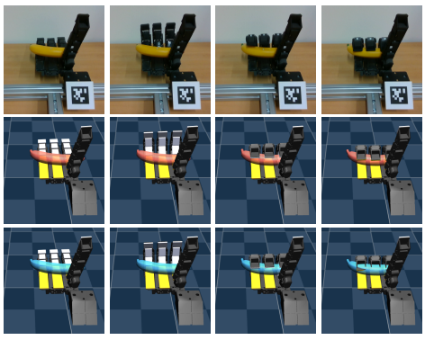

Visuo-Tactile Object Pose Estimation for a Multi-Finger Robot Hand with Low-Resolution In-Hand Tactile Sensing
(opens in new tab)
Venue. ICRA (2025)
Materials.
DOI(opens in new tab)
PDF(opens in new tab)
Abstract. Accurate 3D pose estimation of grasped objects is an important prerequisite for robots to perform assembly or in-hand manipulation tasks, but object occlusion by the robot's own hand greatly increases the difficulty of this perceptual task. Here, we propose that combining visual information and proprioception with binary, low-resolution tactile contact measurements from across the interior surface of an articulated robotic hand can mitigate this issue. The visuo-tactile object-pose-estimation problem is formulated probabilistically in a factor graph. The pose of the object is optimized to align with the three kinds of measurements using a robust cost function to reduce the influence of visual or tactile outlier readings. The advantages of the proposed approach are first demonstrated in simulation: a custom 15-DoF robot hand with one binary tactile sensor per link grasps 17 YCB objects while observed by an RGB-D camera. This low-resolution in-hand tactile sensing significantly improves object-pose estimates under high occlusion and also high visual noise. We also show these benefits through grasping tests with a preliminary real version of our tactile hand, obtaining reasonable visuo-tactile estimates of object pose at approximately 13.3 Hz on average.
Link to this page: